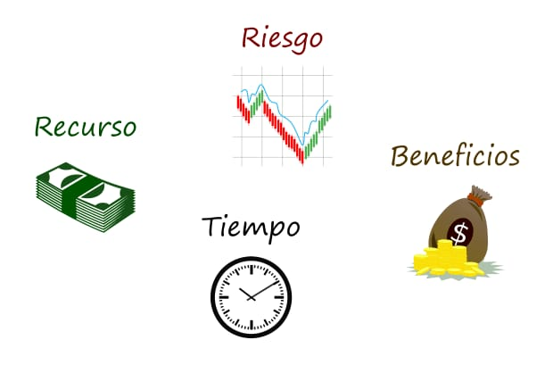

La Macroeconomía
La Macroeconomía es la rama de la economía encargada de estudiar el comportamiento, desempeño, variables del PIB, inflación desempleo, políticas economícas implementadas
por el gobierno, para asi poder predecir y fluctuasiones economícas de una nación o región.
Acontinuación algunas descripciones acerca de lo que estudia la Macroeconomía:
Producto Interno Bruto (PIB)
Medida de la producción total de bienes y servicios de un país durante un periodo determinado.
Un aumento de este se interpreta como un crecimiento economíco.
Producto Nacional Bruto (PNB)
Este mide el valor monetario de todos los bienes y servicios finales producidos por los factores de producción de un país
(trabajo, capital y empresas) en un determinado periodo. Útil para analizar empresas extranjeras e invertir en su territorio.
Inflación
Aumento generalizado y sostenido de los precios de bienes y servicios, se mide con el indice nacional de precios al consumidor
(INPC) para medir la inflación, variación de precios de bienes y servicios consumido por las familias, por el seguimiento de una o esta de bienes
promedio de los hogares, un aumento igual a inlación, implicación en la política monetaria
Desempleo
Porcentaje de personas disponibles y dispuestas a trabajar. Se mide con la tasa de desempleo refleja problemas economícos,
menor consumo.
Consumo
Gastos de familia en bines y servicios para satisfacer sus necesidades.
Ahorro
Parte de los ingresos que no se gastan y se guardan para el futuro.
Debe existir un equilibrio entre consumo y ahorro para que no exista estancamiento.
Inversión

Uso de recursos para adquirir bines de capital con fin de producir más a
futuro. Impulsa el crecimiento economico para generar empleo y aumento de producción.
Tasas de intereses

Precio que se paga por pedir prestado o la ganancia que se recibe por ahorrar.
Tipos de cambio
Valor de la moneda nacional respecto a otras monedas extranjeras.
Comercio Exterior

Comprende las importaciones y exportaciones, conecta la economia con productos no producidos localmente para ingresos del país.